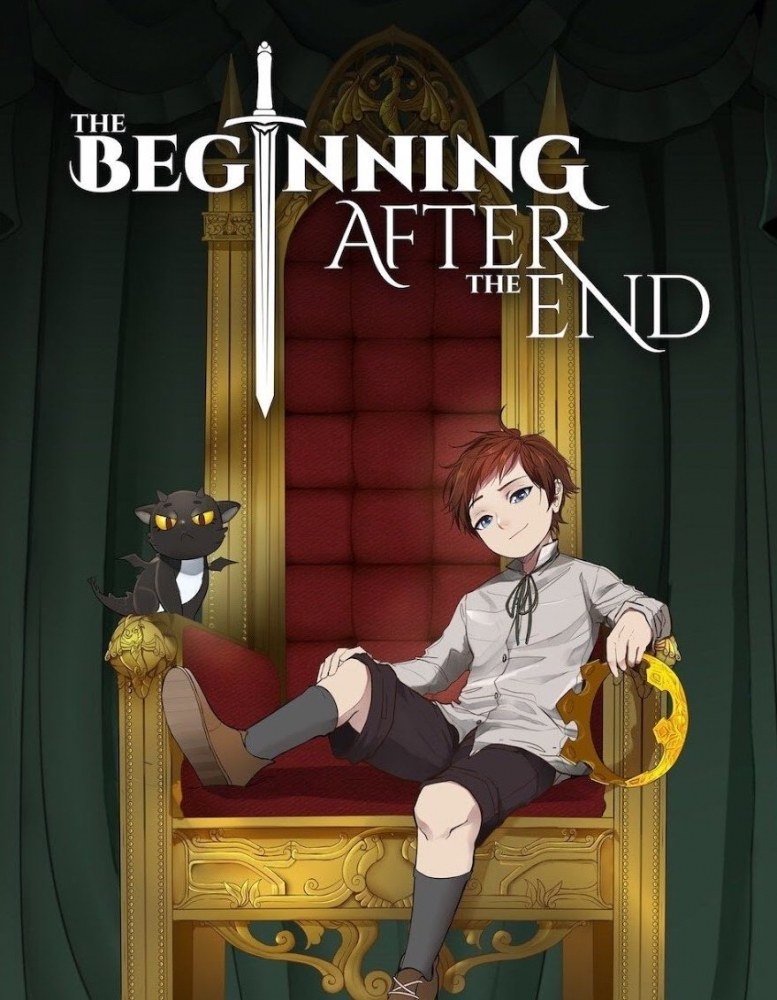

The beginning after the end
Synopsis
Réincarné dans un nouveau monde rempli de magie et de monstres, le roi a une seconde chance de revivre sa vie en tant qu'Arthur Leywin, premier fils d'un modeste couple d'aventuriers pratiquant la magie.Corriger les erreurs de son passé ne sera cependant pas son seul défi. Sous la paix et la prospérité du nouveau monde se cache un courant sous-jacent qui menace de détruire tout ce pour quoi il a travaillé, remettant en question son rôle et la raison de sa nouvelle naissance.

Solo Leveling
Synopsis
Sung Jin-Woo est le plus faible des chasseurs de rang E, autrement dit, le plus faible parmi les faibles. Il est donc surnommé par ses confrères chasseurs “le faible”. En tout cas il l’était, jusqu’à ce qu’il se retrouve piégé dans un donjon et y acquière une capacité… étrange. Il peut désormais voir une interface lui montrant des quêtes.Sung Jin Woo va-t-il réussir à devenir le plus puissant des Chasseurs tout en surmontant les épreuves et conspirations?
Magic Emperor
Synopsis
L’histoire raconte la vie de l’empereur magique, l’homme le plus fort du monde et son périple après sa mort et sa réincarnation en un garçon sans culture.Magic Emperor summary is updating. Come visit MangaNato.com sometime to read the latest chapter of Magic Emperor. If you have any question about this manga, Please don't hesitate to contact us or translate team. Hope you enjoy it.

Mercenary Enrollment
Synopsis
Ijin est un jeune mercenaire qui est le seul survivant d'un accident d'avion survenu dans son enfance. Il vient tout juste de retourner auprès de sa famille qui le croyait mort durant ses 10 ans d'absence. Ijin pourra-t-il mettre de côté son passé sombre et mener une vie normale de lycéen ? Yu Ijin was the sole survivor of a plane crash when he was little. After becoming a mercenary to survive for 10 years, he returns to his family in his hometown.